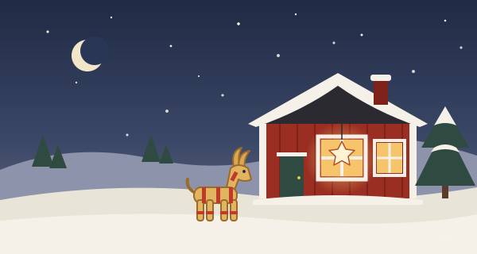

A1Zviedru valoda
God jul! Ziemassvētki zviedru valodā
Vārds Datums Cik labi man padevās?
1
Ziemassvētku vārdi
en-vārdi (lielākā daļa)ett-vārdi
- en julZiemassvētki
- julaftonZiemassvētku vakars (24.12.)
- en julgranZiemassvētku eglīte
- en tomteZiemassvētku vecītis, rūķis
- en julklappZiemassvētku dāvana
- ett ljussvece; gaisma
- en stjärnazvaigzne
- ett julkortZiemassvētku kartīte
- en pepparkakapiparkūka
- en lussekattsafrāna bulciņa
- en glöggkarstvīns, glegs
- ett julbordZiemassvētku mielasts
- en skinkašķiņķis
- en julbocksalmu āzis
- ett luciatågLūcijas gājiens
- snösniegs
- en snögubbesniegavīrs
- en familjģimene
- nyårsaftonVecgada vakars (31.12.)
- kalltauksti